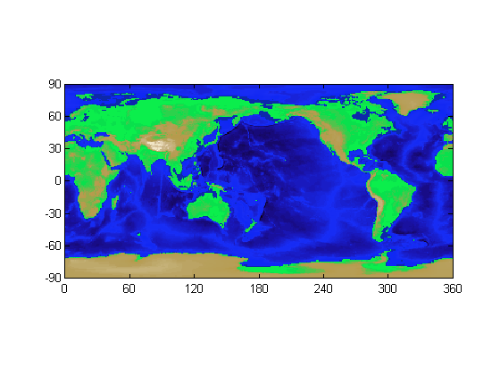
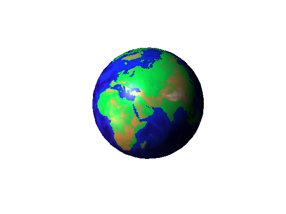

Earth's Topography
MATLAB® can be used to create different kinds of maps. Here, we show ways of representing the topography of the Earth. The topography data used in this demo is available from the National Geophysical Data Center, NOAA US Department of Commerce under data announcement 88-MGG-02.
Contents
The Data
The data is stored in a MAT file called topo.mat. The variable topo contains the altitude data for the Earth. topomap1 contains the colormap for the altitude.
load('topo.mat','topo','topomap1'); whos topo topomap1
Name Size Bytes Class Attributes topo 180x360 518400 double topomap1 64x3 1536 double
Contour Plot
CONTOUR creates a contour plot of the Earth from this data. Here, we are producing a contour based on points on the map that have zero altitude. What you thus see is an outline of the continents.
contour(0:359,-89:90,topo,[0 0],'b') axis equal box on set(gca,'XLim',[0 360],'YLim',[-90 90], ... 'XTick',[0 60 120 180 240 300 360], ... 'Ytick',[-90 -60 -30 0 30 60 90]);

2-D Image Plot
IMAGE creates a 2-D image plot from the data in topo and topomap1. You can see the elevation information in this figure. Here, altitudes correspond to shades of green, while depths (below sea level) correspond to shades of blue.
hold on image([0 360],[-90 90],topo,'CDataMapping', 'scaled'); colormap(topomap1);
3-D Plot
The globe!
The SPHERE function returns x,y,z data that are points on the surface of a sphere (50 points in this case). Observe the altitude data in topo mapped onto the coordinates of the sphere contained in x, y and z. Two light sources illuminate the globe.
[x,y,z] = sphere(50); cla reset axis square off props.AmbientStrength = 0.1; props.DiffuseStrength = 1; props.SpecularColorReflectance = .5; props.SpecularExponent = 20; props.SpecularStrength = 1; props.FaceColor= 'texture'; props.EdgeColor = 'none'; props.FaceLighting = 'phong'; props.Cdata = topo; surface(x,y,z,props); light('position',[-1 0 1]); light('position',[-1.5 0.5 -0.5], 'color', [.6 .2 .2]); view(3)